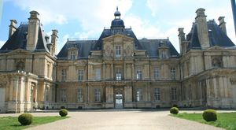
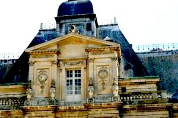
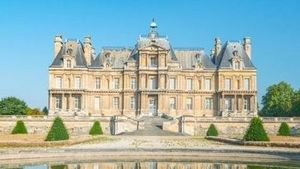
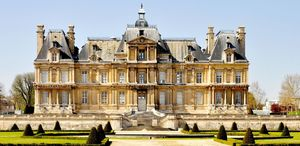

Recensement Jean-Claude Truffet
| Département | 78 — Yvelines |
| Canton | Sartrouville |
| Commune | Maisons Lafitte |
| Type d'édifice | Palais |
| Période d'origine | XVI |




Maisons LAFFITTE, est destiné à lui permettre d'accueillir le Roi. Il confie le projet à l'un des plus grands architecte de cette époque François Mansart. En 1650, Longueil devient Surintendant des Finances. Mais son apogée est en avril 1651, lorsqu'il reçoit le Roi Louis XIV à Maisons, Ce jour-là Longueil offre un banquet et une fête somptueuse pour la régente Anne d'Autriche, le jeune Louis XIV âgé de 13 ans et pour Philippe duc d'Anjou, et d'autres personnages de la cour. En 1671 René de Longueil reçoit une nouvelle visite du roi au château. Les circonstances de cette visite sont assez tristes. En effet c'est à l'occasion de la mort du duc d'Anjou, 2ème fils de Louis XIV, à Saint-Germain. Louis XIV séjourne pendant plusieurs jours au château de Maisons. René de Longueil meurt à Paris en 1677, à l'âge de 82 ans. Le château reste ensuite propriété des descendants de René de Longueil. Jean René de Longueil disparaît en 1731 à l'âge de 31 ans. Son fils unique, René Prosper de Longueil âgé de 6 mois décède accidentellement un an plus tard et à partir de ce moment, il n'y a plus de descendant masculin. C'est l'extinction des Longueil. Le domaine de Maisons revient à Marie Renée de Belleforière, marquise de Soyécourt. Celle ci décède quelques années plus tard, c'est un petit fils de la marquise qui hérite de la propriété . Louis Armand, marquis de Soyécourt, le château représente une charge très lourde pour le marquis est incapable de financer et il cherche à le vendre à partir de 1746. Le château a failli, par deux fois, être racheté par Louis XV, une première fois, en 1747, pour Madame de Pompadour. Elle avait fait savoir au Roi que ce château lui plaisait. Le Roi vient visiter longuement le château. Il est visiblement très intéressé. Mais il renonce à cette acquisition sans explication. Une deuxième fois, en 1770, Louis XV revient au château de Maisons et il y demeure quelques jours en compagnie de Mme du Barry.
Maisons LAFFITTE, Mme du Barry se plait qu'elle aimerait bien l'acquérir, ainsi le roi demande à un architecte de réaliser des plans de transformations intérieures pour améliorer le confort du château, les plans présentés proposaient des modifications dans la structure du bâtiment pour le rendre habitable. Devant l'importance des travaux, le Roi s'empressa de renoncer à ce projet d'acquisition. Il faudra attendre plus de 30 ans pour trouver un acquéreur. Le comte d'Artois, frère du roi Louis XVI, acquiert le château en 1777 âgé de 20 ans. Il cherchait une propriété proche de Saint Germain en attendant la fin des travaux de reconstruction du château Neuf. A Maisons le comte d'Artois entreprend aussi des travaux de restauration et de décoration qu'il confie à l'architecte Bellanger. On peut voir aujourd'hui la salle à manger dite salle à manger du comte d'Artois réalisée dans un décor néo-classique, les travaux de restauration ne seront jamais terminés . Le comte d'Artois était si compromis par son attitude radicale et intransigeante que Louis XVI, lui-même, après la prise de la Bastille, lui demande de partir en exil à l'étranger. Et il part dés le 17 juillet 1789. Il se réfugie auprès de plusieurs cours européennes avant de s'installer en Angleterre, il reviendra en france en 1814 et succèdera à Louis XVIII sous le nom de Charles X avant d'être obligé de repartir en exil au moment des journées des trois glorieuses qui permettront l'avènement de Louis Philippe. En 1792, le château de Maisons est confisqué, il devient bien national, on pose les scellés au château et le domaine est mis sous séquestre. Il s'agit des biens de celui qu'on appelle l'émigré Charles Philippe Capet. En 1793, le château est vidé de son mobilier et celui-ci est transporté à Saint-Germain pour être vendu par adjudication. En 1844 divers propriétaires, l'état l'acquiert en 1905.
Famille de René de Longueil "
Palais de Maisons Lafitte grav de 1 à 5